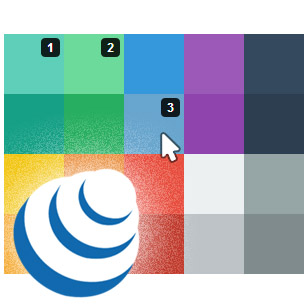

This plugin offers the possibility to select one or many DOM elements with the mouse.
Hold the Ctrl key (or the ⌘ key on Mac) to select several items.
Hold the Shift key to select multiple contiguous items in only one click.
And you can combine the Shift key with the Ctrl/⌘ key.
This plugin works great with this one : jQuery - drag 'n' drop.